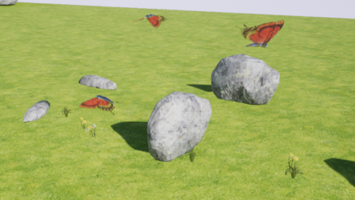
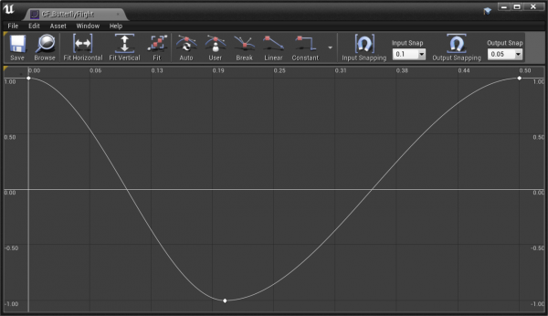
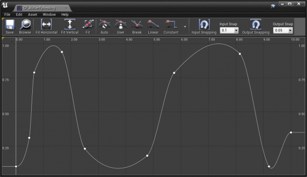

AI Controlled Butterfly - C++ tutorial
Original Author:
Contents
Overview
I am very new to Unreal engine, started with Blueprints first and now doing in C++. This is my first individual project inspired by flying butterflies in Epic's Blueprints tutorial ( can be found under "Learn" section of Epic Games Launcher ). I learned the butterfly AI logic from that tutorial and did it my way in C++. Also assets I used were migrated from that project. I think this tutorial can be helpful for all C++ programmers starting with Unreal.
Here is how the final work looks like ...

... and some quick recording.
<youtube> https://youtu.be/cT5CrV4VAxE
What can you learn?
You can learn following Unreal C++ programming topics from this tutorial:
- Create actor's components and build their hierarchy. Load mesh and assign it to component.
- Create and load float curve asset into the program.
- Use of FTimeline following float curve to animate meshes.
- Move the object changing its location and rotation. Very easy vector and rotatory mathematics used for that.
- Checking for collision with the line tracing.
- Using random ranges.
- Creating simple state machine to implement AI logic.
- Debugging with the help of HUD Message or Output Log.
Requirements
You need to know basics of Unreal: C++ project creation, C++ class creation, using Content Browser and create assets, compile C++ project, basic scene set up, analyse C++ code. I will not guide you through details of the source code but it is well commented to help you understand its logic.
Step by step
Here is a quick guide to reproduce my project:
- Create new C++ project in Unreal Project Browser . Use "Basic Code" template, no need for Starter Content .
- Download Blueprints project from Epic Games Launcher/Learn .
- Open Blueprints project, in Content Browser go to Content/Assets/Meshes folder. Migrate following assets: S_Butterfly_Body , S_Butterfly_Left_Wing , S_Butterfly_Right_Wing to your just created C++ project folder. As a target for migration select Content folder of your project.
-
Open your C++ project in Unreal. In
Content Browser
create 3 Curve Float assets ( right click then
Miscellaneous/Curve
and then select
CurveFloat
):
- CF_ButterflyFlight with key points: ( 0, 1 ), ( 0.2, -1 ), ( 0.5, 1 ) 
-
CF_ButterflyLanding
with key points: ( 0, 0 ), ( 1.5, 1 )

- CF_ButterflyResting with key points: ( 0, 0.1 ), ( 0.66, 0.79 ), ( 1.65, 0.95 ), ( 2.5, 0.23 ), ( 4.77, 0.18 ), ( 5.75, 0.78 ), ( 8.15, 0.92 ), ( 9.2, 0.1 ), ( 10, 0.35 ) 
- Create new C++ class using Actor as the parent and naming it ButterflyActor . Compile your C++ project.
- You can now replace your ButterflyActor.cpp and .h files with my files. Recompile again.
- You can either drag C++ ButterFlyActor to your scene or create Blueprint using ButterflyActor as a parent and even change its logic there. While ButterflyActor object is selected in the Editor you can change TargetAttractor , MaxFlightRange , GroundLevel parameters found under Butterfly category in Details panel.
- Enjoy the fly!
AI logic debrief
I hope my comments in source code are clear enough to help you understand it. Here is brief logic description:
- The first route is toward TargetAttractor location. Then target is exchanged with random location but not farther then MaxFlightRange from TargetAttractor .
- Flying state: - sets random flight time on the beginning; - every tick: changes location and rotation of the root component following move logic; checks for collision, if hit found then switch to Landing Approach state; if approaches close enough to the target then selects randomly new target; checks a flight time and if finished then targets to GroundLevel ; - with use of time line controls also swing of wings and the body.
- Landing Approach state: - using new time line changes location and rotation of the root component different way than during Flying : - continues to swing wings but 2.5 time faster now; - if landing time line is not playing any more then ends this state.
- Resting state : - sets random time of resting; - plays wings swing time line with the different curve float; - if time of resting is up then ends this state and triggers Lift Off .
- Lift Off state: - sets the time of Lift Off and triggers fast wings swing; - smoothly change just location of the root component; - when the lift off time is up then ends current state and triggers Flying .
Source Code
Here are ButterflyActor.h and ButterflyActor.cpp files:
// Fill out your copyright notice in the Description page of Project Settings.
#pragma once
#include "CoreMinimal.h"
#include "GameFramework/Actor.h"
#include "ButterflyActor.generated.h"
UCLASS()
class BUTTERFLYPROJECT_API AButterflyActor : public AActor
{
GENERATED_BODY()
public:
// Sets default values for this actor's properties
AButterflyActor();
protected:
// Called when the game starts or when spawned
virtual void BeginPlay() override;
public:
// Called every frame
virtual void Tick( float DeltaTime ) override;
// called before garbage collection
virtual void BeginDestroy();
#if WITH_EDITOR
// this is to update TargetAttractor parameter after it changed in Editor
virtual void PostEditChangeProperty( FPropertyChangedEvent& PropertyChangeEvent );
#endif
// components created in that class
UPROPERTY( VisibleDefaultsOnly, Category = Butterfly )
class UArrowComponent* ButterflyRoot;
UPROPERTY( VisibleDefaultsOnly, Category = Butterfly )
class UStaticMeshComponent* Body;
UPROPERTY( VisibleDefaultsOnly, Category = Butterfly )
class UStaticMeshComponent* LeftWing;
UPROPERTY( VisibleDefaultsOnly, Category = Butterfly )
class UStaticMeshComponent* RightWing;
UPROPERTY( VisibleDefaultsOnly, BlueprintReadOnly, Category = Butterfly )
class UArrowComponent* FlightTarget;
// base location to find new random target
UPROPERTY( EditAnywhere, BlueprintReadWrite, Category = Butterfly )
FVector TargetAttractor;
// max range value from TargetAttractor
UPROPERTY( EditAnywhere, BlueprintReadWrite, Category = Butterfly )
float MaxFlightRange;
// Z level for forced landing
UPROPERTY( EditAnywhere, BlueprintReadWrite, Category = Butterfly )
float GroundLevel;
protected:
// state machine states
enum ButterflyStateEnum
{
DoNothing,
Resting,
LiftOff,
Flying,
LandingApproach,
};
// stores state machine current status
ButterflyStateEnum ButterflyState;
// check for collisions during the flight
void CheckCollision();
// offsets location during the flight
void FlyingMoveLocation( float DeltaTime );
// chnage rotation during hte flight
void FlyingMoveRotation( float DeltaTime );
// randomly selects new target
void ChooseNewTarget();
// rotate the wings, if Reset is true then positions them in default rotation
void RotateWings( float Value, bool Reset = false );
// moves the body
void RotateBody( float Value, bool Reset = false );
// below methos service states of state machine
void LiftOffStart();
void LiftOffEnd();
void FlyingStart();
UFUNCTION()
void FlyingContinues( float Value ); // method passed to Timeline processing has to be declared with UFUNCTION()!!!
void FlyingEnd();
void LandingApproachStart();
UFUNCTION()
void LandingApproachContinues( float Value ); // method passed to Timeline processing has to be declared with UFUNCTION()!!!
void LandingApproachEnd();
void RestingStart();
UFUNCTION()
void RestingContinues( float Value ); // method passed to Timeline processing has to be declared with UFUNCTION()!!!
void RestingEnd();
// below variables are made available to the Blueprint logic
UPROPERTY( BlueprintReadWrite )
float ForwardSpeed;
UPROPERTY( BlueprintReadWrite )
float UpwardSpeed;
UPROPERTY( BlueprintReadWrite )
FVector CurrentTargetLocation;
// internal backup variable
FVector CurrentTargetLocationBackup;
// landing locations
FVector LandingApproachStartLocation;
FRotator LandingApproachStartRotation;
FVector LandingApproachEndLocation;
FVector LandingApproachEndNormal;
// landing support locations
FVector LandingLocationSlightlyBelow;
FVector LandingLocationSlightlyAbove;
// timers counting seconds till next event
float SecondsTillNextSwing;
float SecondsTillLiftOff;
float SecondsTillLiftOffEnd;
float SecondsTillNextLanding;
// setups struct fields and binds method
void MaintainTimeLine( struct FTimeline* TimeLine, class UCurveFloat* CurveFloat, const FName& MethodName, bool Looping = false );
//pointers to Timeline structures
struct FTimeline* FTLButterflyFlight;
struct FTimeline* FTLButterflyLanding;
struct FTimeline* FTLButterflyResting;
// load mesh asset
static void LoadMeshAsset( UStaticMeshComponent* MeshComponent, const TCHAR* AssetPath );
// load curve float asset
static UCurveFloat* LoadCurveFloatAsset( const TCHAR* AssetPath );
};
// Fill out your copyright notice in the Description page of Project Settings.
#include "ButterflyActor.h"
#include "Components/ArrowComponent.h"
#include "Kismet/KismetMathLibrary.h"
#include "Components/TimelineComponent.h"
#include "Math/UnrealMathUtility.h"
#include "DrawDebugHelpers.h"
#include "ConstructorHelpers.h"
// prints message to the screen with selected color
#define HUDMessage(color,text) if( GEngine ) GEngine->AddOnScreenDebugMessage( -1, 5.0f, color, text );
// those variables store resources, which should be loaded only once
static UCurveFloat* CFButterflyFlight;
static UCurveFloat* CFButterflyLanding;
static UCurveFloat* CFButterflyResting;
// Sets default values
AButterflyActor::AButterflyActor() :
ForwardSpeed( 100.0f ),
UpwardSpeed( 1.0f ),
MaxFlightRange( 400.0f ),
GroundLevel( 0 ),
ButterflyState( DoNothing ),
SecondsTillNextSwing( 0.0f ),
SecondsTillLiftOff( 32.0f ),
SecondsTillLiftOffEnd( 1.8f ),
SecondsTillNextLanding( 9 )
{
// Set this actor to call Tick() every frame. You can turn this off to improve performance if you don't need it.
PrimaryActorTick.bCanEverTick = true;
// create components hierachy
// start from the root, which is starting position arrow component
ButterflyRoot = CreateDefaultSubobject<UArrowComponent>( TEXT( "ButterflyRoot" ) );
ButterflyRoot->SetArrowColor( FLinearColor( FColor::Green ) );
ButterflyRoot->bEditableWhenInherited = true;
ButterflyRoot->SetRelativeScale3D( FVector( 4.0f, 4.0f, 4.0f ) );
// make it a root component
RootComponent = ButterflyRoot;
// buterfly body mesh component now
Body = CreateDefaultSubobject<UStaticMeshComponent>( TEXT( "Body" ) );
Body->SetupAttachment( RootComponent );
LoadMeshAsset( Body, TEXT( "/Game/Assets/Meshes/S_Butterfly_Body.S_Butterfly_Body" ) );
// left wing mesh component
LeftWing = CreateDefaultSubobject<UStaticMeshComponent>( TEXT( "LeftWing" ) );
LeftWing->SetupAttachment( Body );
LoadMeshAsset( LeftWing, TEXT( "/Game/Assets/Meshes/S_Butterfly_Left_Wing.S_Butterfly_Left_Wing" ) );
// right wing mesh component
RightWing = CreateDefaultSubobject<UStaticMeshComponent>( TEXT( "RightWing" ) );
RightWing->SetupAttachment( Body );
LoadMeshAsset( RightWing, TEXT( "/Game/Assets/Meshes/S_Butterfly_Right_Wing.S_Butterfly_Right_Wing" ) );
// target position arrow component
FlightTarget = CreateDefaultSubobject<UArrowComponent>( TEXT( "FlightTarget" ) );
FlightTarget->SetupAttachment( RootComponent );
// some default target position
FlightTarget->SetRelativeLocation( FVector( 40.0f, 20.0f, 10.0f ) );
// load ButterflyFlight curve float
if ( CFButterflyFlight == nullptr )
CFButterflyFlight = LoadCurveFloatAsset( TEXT( "/Game/Assets_Mine/CF_ButterflyFlight" ) );
// load butterfly landing curve float
if ( CFButterflyLanding == nullptr )
CFButterflyLanding = LoadCurveFloatAsset( TEXT( "/Game/Assets_Mine/CF_ButterflyLanding" ) );
// load butterfly resting curve float
if ( CFButterflyResting == nullptr )
CFButterflyResting = /*UMyStaticLibrary::*/LoadCurveFloatAsset( TEXT( "/Game/Assets_Mine/CF_ButterflyResting" ) );
// create FTimeLine structures so can be used during the Play
FTLButterflyFlight = new FTimeline;
FTLButterflyLanding = new FTimeline;
FTLButterflyResting = new FTimeline;
}
void AButterflyActor::BeginDestroy()
{
//UE_LOG( LogTemp, Warning, TEXT("In AButterflyActor::BeginDestroy()") );
// clean up FTimeline structures
delete FTLButterflyFlight;
delete FTLButterflyLanding;
delete FTLButterflyResting;
// must call for the super class!!!
Super::BeginDestroy();
}
// Called when the game starts or when spawned
void AButterflyActor::BeginPlay()
{
Super::BeginPlay();
// initial target location
CurrentTargetLocation = TargetAttractor;
// setup butterfly flight timeline
if ( CFButterflyFlight )
{
MaintainTimeLine( FTLButterflyFlight, CFButterflyFlight, FName( "FlyingContinues" ), true );
}
// setup butterfly landing timeline
if ( CFButterflyLanding )
{
MaintainTimeLine( FTLButterflyLanding, CFButterflyLanding, FName( "LandingApproachContinues" ) );
}
// setup butterfly resting timeline
if ( CFButterflyResting )
{
MaintainTimeLine( FTLButterflyResting, CFButterflyResting, FName( "RestingContinues" ) );
}
//FlyingStart();
// start from resting state now
RestingStart();
}
// Called every frame
void AButterflyActor::Tick( float DeltaTime )
{
Super::Tick( DeltaTime );
// let the update of timelines
FTLButterflyFlight->TickTimeline( DeltaTime );
FTLButterflyLanding->TickTimeline( DeltaTime );
FTLButterflyResting->TickTimeline( DeltaTime );
// act according to the current state
switch ( ButterflyState )
{
case LiftOff:
// count seconds till end of LiftOff phase
if ( SecondsTillLiftOffEnd <= 0 )
LiftOffEnd();
else
SecondsTillLiftOffEnd -= DeltaTime;
// just move the butterfly location, no rotation
FlyingMoveLocation( DeltaTime );
break;
case Flying:
// move the buterfly location
FlyingMoveLocation( DeltaTime );
// and rotate it accordingly
FlyingMoveRotation( DeltaTime );
// in case of collision start LandApproach state
CheckCollision();
// check if close to current target
if ( ( CurrentTargetLocation - ButterflyRoot->GetComponentLocation() ).Size() < 60 )
ChooseNewTarget();
// count seconds till landing, so butterfly is not flying to long
if ( SecondsTillNextLanding <= 0 )
CurrentTargetLocation.Z = GroundLevel;
else
SecondsTillNextLanding -= DeltaTime;
break;
case LandingApproach:
// if landing timeline is not playing then finish this state
if ( !FTLButterflyLanding->IsPlaying() )
{
//UE_LOG(LogTemp, Warning, TEXT("LandingApproachEnd in Tick()") );
LandingApproachEnd();
}
break;
case Resting:
// if resting timeline is not playing then ...
if ( !FTLButterflyResting->IsPlaying() )
if ( SecondsTillNextSwing > 0 )
// ... count seconds ...
SecondsTillNextSwing -= DeltaTime;
else
{
// ... or paly next swing if it is time for that
FTLButterflyResting->PlayFromStart();
// assign random value till next Swing
SecondsTillNextSwing = FMath::FRandRange( 5.0f, 10.0f );
}
// count seconds till LiftOff ...
SecondsTillLiftOff -= DeltaTime;
if ( SecondsTillLiftOff <= 0 )
{
// ... finish this state and start LiftOff
RestingEnd();
LiftOffStart();
}
break;
default:
break;
}
}
void AButterflyActor::FlyingMoveLocation( float DeltaTime )
{
// calculate move offset in DeltaTime and sets root component
FVector DeltaLocation( ForwardSpeed, 0.0f, UpwardSpeed );
DeltaLocation *= DeltaTime;
ButterflyRoot->AddLocalOffset( DeltaLocation );
}
void AButterflyActor::FlyingMoveRotation( float DeltaTime )
{
// calculate rotation change in DeltaTime and sets root component
FRotator TargetRotation = UKismetMathLibrary::FindLookAtRotation( ButterflyRoot->GetComponentLocation(), CurrentTargetLocation );
FRotator NewDirectionRotation = FMath::RInterpTo( ButterflyRoot->GetComponentRotation(), TargetRotation, DeltaTime, 1.2 );
ButterflyRoot->SetWorldRotation( NewDirectionRotation );
}
void AButterflyActor::ChooseNewTarget()
{
float RandomHX = FMath::FRandRange( -0.7f*MaxFlightRange, MaxFlightRange );
float RandomHY = FMath::FRandRange( -0.7f*MaxFlightRange, MaxFlightRange );
float RandomV = FMath::FRandRange( -0.15f*MaxFlightRange, 0.5f*MaxFlightRange );
CurrentTargetLocation = TargetAttractor + FVector( RandomHX, RandomHY, RandomV );
//UE_LOG(LogTemp, Warning, TEXT("Approaching CurrentTarget Location"));
}
void AButterflyActor::CheckCollision()
{
// get current location of the root component
FVector ButterflyRootLocation = ButterflyRoot->GetComponentLocation();
// trace if any collision is in the front
#define TRACE_LENGTH 70
// forward vector is unit vector hence it is mulitplied, then slightly put down and finaly added to the current location
FVector TraceEndLocation = ButterflyRootLocation + ( ( ButterflyRoot->GetForwardVector()*TRACE_LENGTH ) - FVector( 0.0f, 0.0f, 15.0f ) );
// you can see tracing vector below
//DrawDebugLine(GetWorld(), ButterflyRootLocation, TraceEndLocation, FColor::Red, false, -1.0f, 0, 1.0f);
// set parameters for tracing
FHitResult Hit;
FCollisionObjectQueryParams ObjectQueryParams( ECC_WorldStatic );
FCollisionQueryParams QueryParams( FName(), true, this );
// call tracing function
bool Result = GetWorld()->LineTraceSingleByObjectType( Hit, ButterflyRootLocation, TraceEndLocation, ObjectQueryParams, QueryParams );
// if hit founf then ...
if ( Result )
{
//UE_LOG(LogTemp, Log, TEXT("-"));
//UE_LOG( LogTemp, Warning, TEXT("Trace hit for %s into %s"), *GetName(), *Hit.Actor->GetName() );
//UE_LOG(LogTemp, Warning, TEXT("Location: %s ImpactPoint: %s"), *Hit.Location.ToString(), *Hit.ImpactPoint.ToString() );
//UE_LOG(LogTemp, Warning, TEXT("Normal: %s ImpactNormal: %s"), *Hit.Normal.ToString(), *Hit.ImpactNormal.ToString());
// store hit location in local variables
LandingApproachEndLocation = Hit.Location;
LandingApproachEndNormal = Hit.Normal;
// ... start LandingApproach
LandingApproachStart();
}
}
void AButterflyActor::RotateWings( float Value, bool Reset )
{
// neutral values for the mesh positions
float XLeftWing = 0, XRightWing = 0;
if ( !Reset )
{
// set mesh positions following Value
XLeftWing = FMath::Lerp( 0.0f, 80.0f, Value );
XRightWing = FMath::Lerp( 0.0f, -80.0f, Value );
}
// change mesh
LeftWing->SetRelativeRotation( FRotator( 0.0f, 0.0f, XLeftWing ) );
RightWing->SetRelativeRotation( FRotator( 0.0f, 0.0f, XRightWing ) );
//UE_LOG( LogTemp, Warning, TEXT( "Value: %f XLeftWing: %f XRightWing: %f" ), Value, XLeftWing, XRightWing );
}
void AButterflyActor::RotateBody( float Value, bool Reset )
{
// neutral values for the mesh positions
float ZBody = 0, YBody = 0;
if ( !Reset )
{
// set mesh positions following Value
ZBody = FMath::Lerp( 0.5f, -0.5f, Value );
YBody = FMath::Lerp( 4.0f, -2.0f, Value );
}
// change mesh
Body->SetRelativeLocation( FVector( 0.0f, 0.0f, ZBody ) );
Body->SetRelativeRotation( FRotator( YBody, 0.0f, 0.0f ) );
}
void AButterflyActor::RestingStart()
{
// change state machine status
ButterflyState = Resting;
// play the timeline
FTLButterflyResting->PlayFromStart();
// get random time till LiftOff
SecondsTillLiftOff = FMath::FRandRange( 11.0f, 18.0f );
}
void AButterflyActor::RestingContinues( float Value )
{
// animate wings in line with the Value value
RotateWings( Value );
//UE_LOG(LogTemp, Warning, TEXT("RestingContinues"));
}
void AButterflyActor::RestingEnd()
{
// stop the timeline
FTLButterflyResting->Stop();
}
void AButterflyActor::FlyingStart()
{
// get random for till the landing
SecondsTillNextLanding = FMath::RandRange( 9.0f, 18.0f );
// set velocity parameters
ForwardSpeed = 100;
UpwardSpeed = 0;
// change state machine status
ButterflyState = Flying;
// .. and start timeline play
FTLButterflyFlight->PlayFromStart();
FTLButterflyFlight->SetPlayRate( 1.0f );
}
void AButterflyActor::FlyingContinues( float Value )
{
//UE_LOG( LogTemp, Warning, TEXT( "Inside FlyingContinues %f" ), Value );
// animate wings and body in line with the Value value
RotateWings( Value );
RotateBody( Value );
}
void AButterflyActor::FlyingEnd()
{
// stop timeline
FTLButterflyFlight->Stop();
// ... prepare for the next fly, this can be moved to FlyingStart but I wanted the first fly targeted TargetAttractor and not a random values
ChooseNewTarget();
}
void AButterflyActor::LandingApproachStart()
{
// store local variables used later on
LandingApproachStartLocation = ButterflyRoot->GetComponentLocation();
LandingApproachStartRotation = ButterflyRoot->GetComponentRotation();
// calculate landing support locations
LandingLocationSlightlyBelow = LandingApproachEndLocation + ( LandingApproachEndNormal * -5 );
LandingLocationSlightlyAbove = LandingApproachEndLocation + ( LandingApproachEndNormal * 5 );
// flight procedure continues with 2.5 faster wing rotation but flying navigation discontinues
FTLButterflyFlight->SetPlayRate( 2.5 );
// change state machine status
ButterflyState = LandingApproach;
// trigger landing timeline to navigate landing
FTLButterflyLanding->PlayFromStart();
}
void AButterflyActor::LandingApproachContinues( float Value )
{
// handle location change for LandingApproach
FVector NewLocation = FMath::Lerp( LandingApproachStartLocation, LandingLocationSlightlyAbove, Value );
ButterflyRoot->SetWorldLocation( NewLocation );
// ... and now rotation excepet last 0.01
if ( Value < 0.99f )
{
// find the target rotation ...
FRotator TargetRotation = UKismetMathLibrary::FindLookAtRotation( ButterflyRoot->GetComponentLocation(), LandingLocationSlightlyBelow );
// ... and pitch it 90 degree
TargetRotation += FRotator( 90.0f, 0.0f, 0.0f );
// lerp (linear interpolation) it so the move is smooth
FRotator NewRotation = FMath::Lerp( LandingApproachStartRotation, TargetRotation, Value );
ButterflyRoot->SetWorldRotation( NewRotation );
//UE_LOG(LogTemp, Warning, TEXT("TargetRotation: %s NewRotation: %s"), *TargetRotation.ToString(), *NewRotation.ToString());
}
}
void AButterflyActor::LandingApproachEnd()
{
// finish Flying state
FlyingEnd();
FTLButterflyLanding->Stop();
// ... and start Resting
RestingStart();
// rotate wings so they stay sligthly up
RotateWings( 0.45f );
// .. and reset body to original position
RotateBody( 0.0f, true );
//UE_LOG( LogTemp, Warning, TEXT("LandingApproachEnd") );
//UE_LOG(LogTemp, Warning, TEXT("End Location: %s Rotaion: %s"), *ButterflyRoot->GetComponentLocation().ToString(), *ButterflyRoot->GetComponentRotation().ToString());
}
void AButterflyActor::LiftOffStart()
{
// set velocity differnt to Flying state
ForwardSpeed = 15;
UpwardSpeed = 30;
// temprarly chanbe current target location
CurrentTargetLocationBackup = CurrentTargetLocation;
CurrentTargetLocation = LandingApproachStartLocation;
// set time till LiftOff end
SecondsTillLiftOffEnd = 1.2f;
// set new state machine status !!! watchout for code racing this must be after FTLButterflyLanding->PlayFromStart();
ButterflyState = LiftOff;
// play Flying timeline
FTLButterflyFlight->PlayFromStart();
FTLButterflyFlight->SetPlayRate( 2.5f );
}
void AButterflyActor::LiftOffEnd()
{
// restore current target location
CurrentTargetLocation = CurrentTargetLocationBackup;
// clean up landing support variables
LandingApproachStartLocation = LandingApproachEndLocation = LandingApproachEndNormal =
LandingLocationSlightlyBelow = LandingLocationSlightlyAbove = FVector( ForceInitToZero );
LandingApproachStartRotation = FRotator( ForceInitToZero );
// start Flying state
FlyingStart();
}
void AButterflyActor::LoadMeshAsset( UStaticMeshComponent * MeshComponent, const TCHAR * AssetPath )
{
ConstructorHelpers::FObjectFinder<UStaticMesh> MeshAsset( AssetPath );
if ( MeshAsset.Succeeded() )
{
MeshComponent->SetStaticMesh( MeshAsset.Object );
}
}
UCurveFloat * AButterflyActor::LoadCurveFloatAsset( const TCHAR * AssetPath )
{
ConstructorHelpers::FObjectFinder<UCurveFloat> CurveAsset( AssetPath );
if ( CurveAsset.Succeeded() )
{
return CurveAsset.Object;
}
return nullptr;
}
void AButterflyActor::MaintainTimeLine( FTimeline * TimeLine, UCurveFloat* CurveFloat, const FName & MethodName, bool Looping )
{
FOnTimelineFloat ProgressionFunction;
ProgressionFunction.BindUFunction( this, MethodName );
TimeLine->AddInterpFloat( CurveFloat, ProgressionFunction );
TimeLine->SetLooping( Looping );
}
#if WITH_EDITOR
void AButterflyActor::PostEditChangeProperty( FPropertyChangedEvent& PropertyChangeEvent )
{
// this is very simple method of handling that, full example can be found here:
// https://docs.unrealengine.com/latest/INT/API/Runtime/Engine/GameFramework/AActor/PostEditChangeProperty/
// HUDMessage(FColor::Red, TEXT("Property changed"))
FlightTarget->SetWorldLocation( TargetAttractor );
Super::PostEditChangeProperty( PropertyChangeEvent );
}
#endif
Next Steps
There are still some functionalities that can be added, e.g. wings color set in object's Details panel, audio effects, collision sphere capsule encapsulating butterfly so 2 actors do not overlap each other or body and wings are not hiding in the ground. That is the work for next tutorial.
Thank you Epic for very inspiring and helpful tutorials!